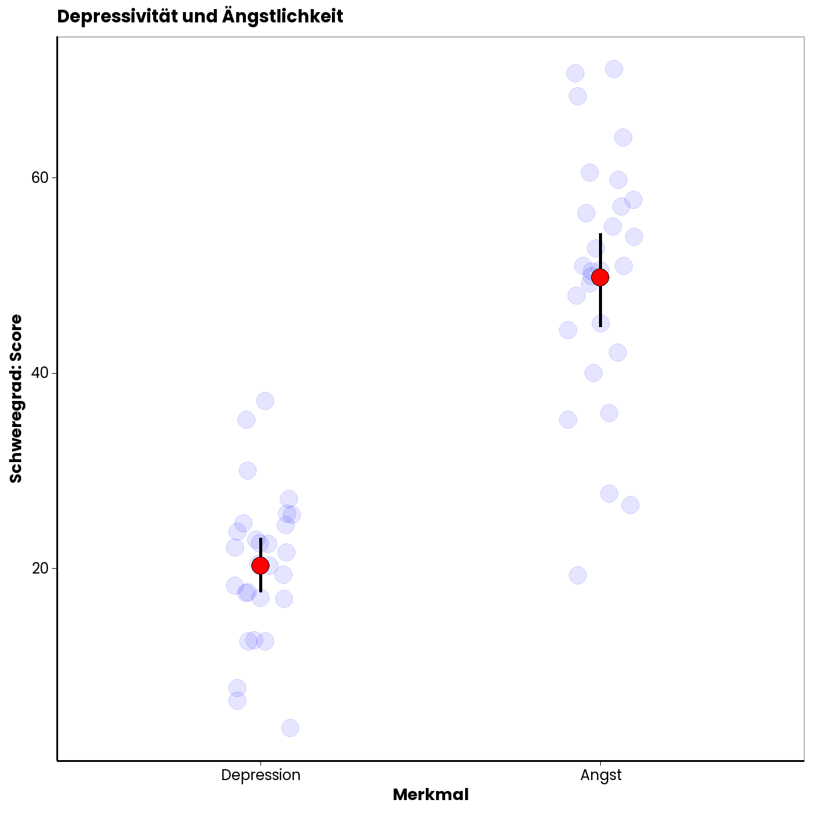
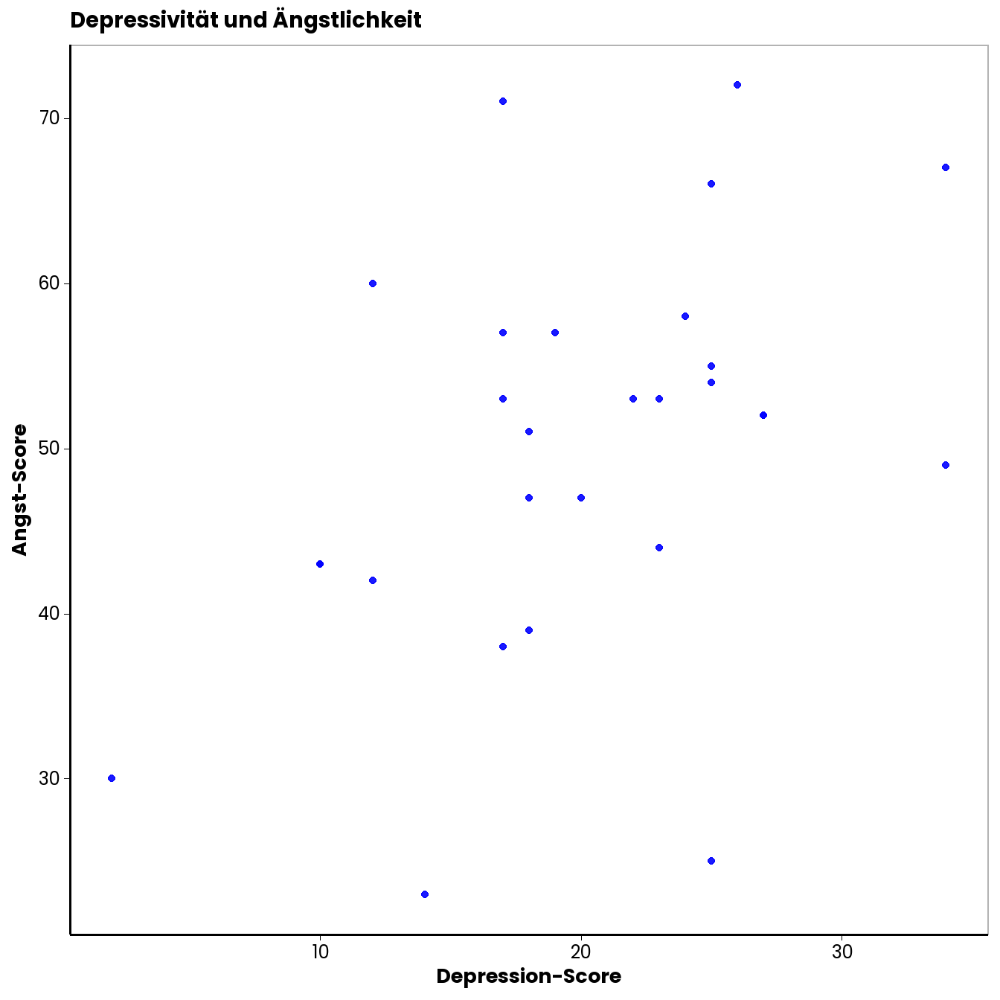

Sitzung 11: Korrelationen und z-Test
Bisher haben wir uns in diesem Semester mit der statistischen Analyse von Hypothesen beschäftigt, bei denen die Prädiktorvariable bzw. die UV (sofern es sich um experimentelle Settings handelte) eine kategoriale Variable ist. Zum Beispiel hatten wir uns angesehen, wie man die Hypothese prüfen kann, dass sich Leute mit veganer Ernährung bzgl. ihrer Cholesterinwerte von Leuten mit nichtveganer Ernährung unterscheiden. Der Prädiktor “Ernährungsweise” war hier eine zweistufige, kategoriale Variable. Bei der Kontrastanalyse haben Sie dann kennengelernt, wie man Hypothesen prüfen kann, bei denen die kategoriale Prädiktorvariable mehr als zwei Ausprägungen hat. Außerdem haben Sie schon gelernt, was man machen kann, wenn die AV nicht mindestens intervall- sondern lediglich ordinalskaliert ist.
In dieser Sitzung geht es nun um Korrelationen, welche den linearen Zusammenhang zwischen zwei Variablen messen. Wir werden uns in diesem Zusammenhang ansehen, wie man Hypothesen über (lineare) Zusammenhänge zwischen zwei Variablen prüfen kann, wenn die Prädiktorvariable nicht kategorial sondern kontinuierlich (z.B. mind. Intervall- oder sogar Verhältnisskalenniveau auffweist.). Der Fokus soll dabei auf Fällen liegen, in denen beide, Prädiktor und AV, kontinuierliche Variablen sind. In der Vorlesung haben Sie aber gehört, dass Korrelationen auch für andere Skalenniveaus berechnet werden können (und den Fall, in dem Prädiktor und AV beide kategoriale Variablen sind, sehen wir uns in der letzten Sitzung auch noch einmal genauer an).
1 Szenario: Zusammenhang zwischen Depressivität und Angst
Stellen wir uns vor, eine Gruppe von ForscherInnen aus dem Bereich klinische Psychologie interessiert sich für PatientInnen mit Depressionen. Es liegen die Daten von 28 PatientInnen vor. Eine häufige Beobachtung ist, dass PatientInnen mit Depressionen auch häufig unter hoher Ängstlichkeit leiden. Unten Sehen Sie eine Abbildung, die die Depressions- und Ängstlichkeitswerte der 28 PatientInnen zeigt. Für die Erfassung der Werte wurden klinische Fragebögen eingesetzt, die für die beiden Merkmale einen Score liefern. Die roten Punkte sind die Mittelwerte (mit 95% KI). Die blauen Punkte zeigen die individuellen Werte der Leute.
Die Daten, auf denen diese Abbildung basiert, finden sie in der Excel-Datei zu dieser Sitzung.

Sie sehen in der Abbildung, dass es erhebliche Unterschiede in den Werten zwischen den einzelnen Leuten gibt. Lässt sich diese Unterschiedlichkeit eventuell zum Teil durch einen Zusammenhang zwischen den Variablen erklären? Vllt. Sind manche Leute ängstlicher als andere, weil sie depressiver sind (oder umgekehrt; eine dritte Möglichkeit wäre, dass eine unbekannte Variable die Unterschiedlichkeit auf beiden Merkmalen erklärt). Die Frage ist, ob es tatsächlich einen Zusammenhang zwischen den beiden Merkmalen gibt. Die ForscherInnen vermuten einen positiven Zusammenhang, d.h., dass Menschen mit hoher Depressivität auch tendenziell stärkere Ängstlichkeit aufweisen. Die Frage, ob ein solcher Zusammenhang existiert, lässt sich mit Hilfe einer Korrelationsanalyse beantworten.
1.1 Statistische Hypothese
Auf Populationsebene gibt es einen positiven Zusammenhang zwischen Depressivität und Ängstlichkeit:
\(H_1\): \(\rho > 0\) \(H_0\): \(\rho \leq 0\).
2 Korrelationsanalyse
Bei der Analyse von (linearen) Zusammenhängen zwischen zwei Variablen werden Korrelationen berechnen und auf Signifikanz geprüft. Der Korrelationskoeffizient \(r\) ist dabei ein Wert, der die Richtung und die Stärke des Zusammenhangs zweier Variablen angibt. \(r\) kann jeden Wert zwischen \(-1\) und \(+1\) annehmen. Ein Wert von \(0\) bedeutet, dass es gar keinen Zusammenhang zwischen den Variablen gibt. Ein Wert von \(+1\) gibt einen deterministischen positiven Zusammenhang an. Positiv bedeutet, dass hohe Werte der einen Variable mit hohen Werten der anderen Variable einhergehen. Deterministisch bedeutet, dass man den Wert der zweiten Variable mit Wissen über den Wert der ersten Variable genau vorhersagen kann (es gibt keinen Fehler in der Vorhersage; man kann sich nicht irren). Ein Wert von \(r = -1.0\) gibt einen deterministischen negativen Zusammenhang an. Negativ bedeutet, dass hohe Werte auf der einen Variable mit niedrigen Werten auf der anderen einhergehen.
Natürlich ein auf Basis von Stichproben geschätzter Zusammenhang (ausgedrückt durch \(r\)) nur zufällig sein (durch den Stichprobenfehler resultieren). Deshalb müssen geschätzte Korrelationskoeffizienten auch auf Signifikanz geprüft werden. Im Folgenden sehen wir uns an, wie man \(r\) bestimmt und danach, wie man prüft, ob \(r\) signifikant von \(0\) verschieden ist. Davor sollten Sie aber noch sehen, wie man Zusammenhänge zwischen zwei Variablen grafisch veranschaulichen kann.
2.1 Abbildungen für den Zusammenhang zweier Variablen
Eine gute Möglichkeit, den Zusammenhang zweier Variablen grafisch darzustellen sind Punktewolken bzw. Scatter-Plots. Beispiele für Scatter-Plots für verschieden starke Zusammenhänge sehen sie unten:
Wie Sie erkennen können, sind die Zusammenhänge umso stärker, je eher die Punktewolke eine (in diesem Fall aufsteigende) Gerade mit einer von Null verschiedenen Steigung bildet. Der Scatterplot für unser Beispiel sieht so aus:

Wie Sie so eine Punktewolke in Excel erstellen können, haben Sie im Video zur Vorlesungsübung gesehen. Sie müssen dazu die Spaltenbereiche mit den Werten der beiden Variablen markieren. Unter den Grafikoptionen müssen Sie dann das Punktediagramm auswählen.
Damit man für die grafische Beurteilung nicht nur die Punktewolke betrachten muss, ist es hilfreich, noch die “beste” Gerade durch die Punktewolke zu legen. Die “beste” Gerade ist dabei jene, von der die Punkte insgesamt den geringsten Abstand haben. In unseren Fall sieht das so aus:
Wie Sie sehen können, hat diese Gerade eine positive Steigung. Deskriptiv liegt also ein positiver Zusammenhang zwischen Depressivität und Ängstlichkeit (gemessen anhand der Fragebögen) vor. Wir können auch eine Geradengleichung in die Abbildung integrieren. Wie das in Excel geht, haben wir Ihnen auch im Vorlesungsübungsvideo erklärt. Sie finden diese Option unter den Optionen der Trendlinie (beim kleinen grünen Plus in den Grafikoptionen).
Unsere Gerade hat also einen Y-Achsenschnittpunkt von \(35\) und eine Steigung von \(0.73\). Je größer der Steigungsparameter, umso stärker ist der Zusammenhang. Das \(r^2\) in der dargestellten Gleichung können Sie zunächst einmal ignorieren, darum kümmern wir uns im Sommersemester genauer.
2.2 Korrelationskoeffizient als Steigungsparameter
Oben wurde bereits erwähnt, dass der Korrelationskoeffizient \(r\) ein Maß für den Zusammenhang zweier Variablen ist, das Werte zwischen \(-1\) und \(1\) annehmen kann. Wir haben gesehen, dass die Steigung der Gerade durch die Punktewolke auch ein Maß für den Zusammenhang ist. Je stärker die Steigung von Null verschieden ist, umso stärker ist der Zusammenhang. Augenscheinlich ist die Steigung dieser Gerade aber nicht auf einen Wertebereich von \(-1\) und \(+1\) beschränkt. Die Steigung hängt z.B. auch davon ab, welche Maßeinheiten die verwendeten Messinstrumente haben (bei Metern würde sich bspw. ein anderes Bild ergeben als bei Zentimetern). Wie hängen dann die Steigung der Gerade durch eine Punktewolke und der Korrelationskoeffizient \(r\) zusammen?
\(r\) ist ein standardisiertes Maß für den Zusammenhang zweier Variablen. Standardisiert heißt hier, Sie wissen es schon, dass die konkreten Einheiten der Variablen vernachlässigt werden können. Bei Standardisierung wird man die ursprünglichen Einheiten los, indem man von jedem vorliegenden Wert der Variable den Mittelwert der Variable abzieht und durch die Streuung teilt. Die resultierenden z-Werte haben dann einen Mittelwert von \(0\) und eine Streuung von \(1\). Die Abstände zwischen den Werten bleiben dabei natürlich erhalten. Entsprechend würden wir durch die Standardisierung zweier Variablen auch nicht den Zusammenhang zwischen ihnen verzerren. Unten sehen Sie erneut eine Punktewolke und eine Gerade, allerdings diesmal basierend auf den standardisierten Werten der Depressions- und Ängstlichkeits-Scores.

Der Korrelationskoeffizient \(r\) entspricht der Steigung der Geraden durch die Punktewolke der z-standardisierten Werte der beiden Variablen.
Berechnung:
Eine Möglichkeit für die Berechnung von \(r\) ist folgende:
\(r_{x,y}~= \frac{1}{n}\sum^n_{i=1} \frac{x_i - \overline{x}}{S_x}\cdot \frac{y_i - \overline{y}}{S_y}\).
In unserem konkreten Fall erhalten wir einen Wert von \(r~= 0.43\).
Excel:
In Excel lässt sich \(r\) mit der =KORREL() Funktion berechnen. Die Funktion verlangt die Eingabe aller \(X\)- und aller \(Y\)-Werte. Sie müssen dazu also die entsprechenden Spaltenabschnitte auswählen.
2.3 Signifikanztest
Natürlich ist es möglich, dass wir nur durch Zufall einen von \(0\) verschiedenen Wert für den Zusammenhang erhalten haben und auf Ebene der Population eigentlich gar kein Zusammenhang zwischen Depression und Angst besteht. Anhand von Stichproben geschätzte Korrelationskoeffizienten müssen auf Signifikanz geprüft werden. In Ihrer Formelsammlung finden sie das Vorgehen dazu auf Seite 2 (z-Test gegen \(0\)).
Ein Problem ist, dass Korrelationskoeffizienten nicht normalverteilt sind. Als Prüfverteilung lässt sich deshalb nicht einfach die Normalverteilung anwenden. Die Verteilung von \(r\) ist aber systematisch (wenn Sie das näher interessiert, schauen Sie hier). Deshalb lassen sich Korrelationskoeffizienten so transformieren, dass sie einer Normalverteilung folgen. Die nötige Transformation nennt man “Fisher-Z-Transformation” (wichtig: hier ist das Z groß und nicht klein wie bei der Standardisierung). Die Formel dafür lautet:
\(Z(r)~= \frac{1}{2} \cdot ln(\frac{1+r}{1-r})\).
Diese Formel müssen Sie in Excel nicht händisch eintippen. Es gibt eine Funktion dafür: \(=FISHER()\). In die Klammern müssen sie den Wert für \(r\) eintragen. In unserem Fall ergibt sich ein Wert für \(Z(r)\) von:
## [1] 0.4585281Dieser Wert lässt sich nun wiederum ein einen Wert der Standardnormalverteilung umrechnen und zwar mit der Formel:
\(z_{emp}~= Z \cdot \sqrt{N -3}\).
In unserem Fall ergibt das:
## [1] 2.292641Der dazugehörige (einseitige) p-Wert ist:
## [1] 0.01093435Wir verwerfen deshalb die \(H_0\) und nehmen an, dass es einen positiven Zusammenhang zwischen Depressivität und Ängstlichkeit gibt.
2.4 Konfidenzintervall für r
Um ein Maß dafür zu haben, wie präzise wir den Zusammenhang geschätzt haben, können wir auch ein 95 % KI für \(r\) berechnen. Dazu müssen wir allerdings einen Umweg gehen, und zunächst die Untergrenzen für den Fisher-Z-transformierten Korrelationskoeffizienten bestimmen:
Untergrenze: \(Z - 1,96 \cdot \frac{1}{\sqrt{N - 3}}\) und
Obergrenze: \(Z + 1,96 \cdot \frac{1}{\sqrt{N - 3}}\).
Wir erhalten:
## [1] 0.06652812## [1] 0.8505281Diese Werte lassen sich wieder zurückrechnen, sodass wir die Unter- und Obergrenze für \(r\) bekommen. Zur Umrechnung können Sie einfach die Umkehrfunktion der Fisher-Z-Funktion in Excel benutzen: \(=FISHERINV()\). Wir erhalten dann:
## [1] 0.06643014## [1] 0.6913453Das Konfidenzintervall ist damit ziemlich breit, was bedeutet, dass wir den wahren Wert des Zusammenhangs in der Population nur relativ ungenau geschätzt haben. Unten sehen Sie noch eine grafische Darstellung von \(r\) und dem ermittelten KI.
Sie können an diesem Beispiel auch erkennen, dass das Konfidenzintervall von Korrelationskoeffizienten nicht symmetrisch ist. Das liegt daran, dass der Wertebereich ja von \(-1\) und \(+1\) begrenzt wird.
3 Weitere Analysen
Wir haben uns angesehen, wie man den Zusammenhang zweier kontinuierlicher Variablen schätzen und auf Signifikanz prüfen kann. Natürlich kann es auch sein, dass man den Unterschied zweier Zusammenhänge testen möchte. Stellen Sie sich vor, jemand behauptet, dass der Zusammenhang zwischen Depressivität und Ängstlichkeit kleiner sei als er Zusammenhang zwischen Depressivität und Antriebslosigkeit. Für beide Zusammenhänge könnte man dann anhand von Stichproben Korrelationskoeffizienten schätzen. Danach kann man statistisch analysieren, wie plausibel es ist, dass die Unterschiede zwischen den beiden \(r\)-Werten nur zufällig sind. Den empirischen z-Wert für die Differenz zweier Korrelationskoeffizienten erhält man durch folgende Formel:
\(z_{emp}~ = \frac{Z_1 - Z_2}{\sqrt{\frac{1}{N_1 - 3}+\frac{1}{N_2 - 3}}}\).
Wir benötigen also auch hier die Fisher-Z-transformierten Korrelationskoeffizienten.
Copyright © 2020 Simon Stephan. All rights reserved.